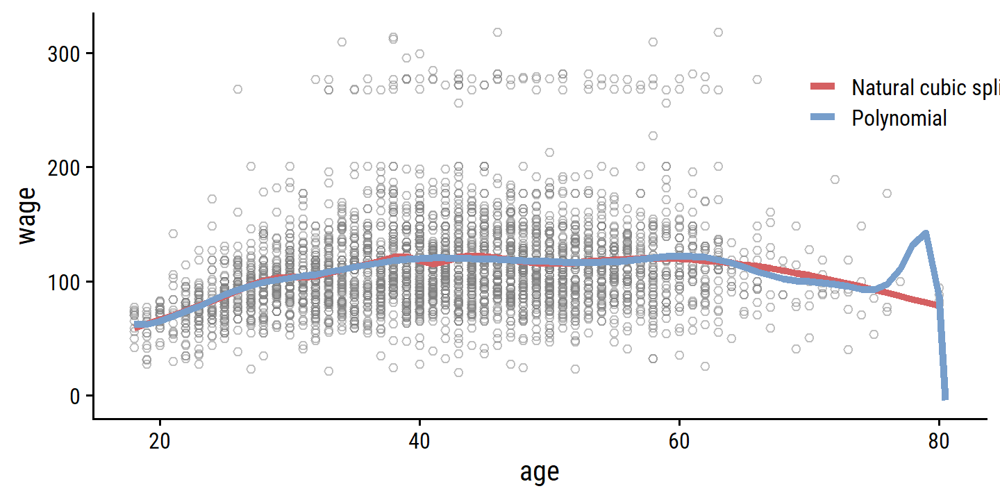
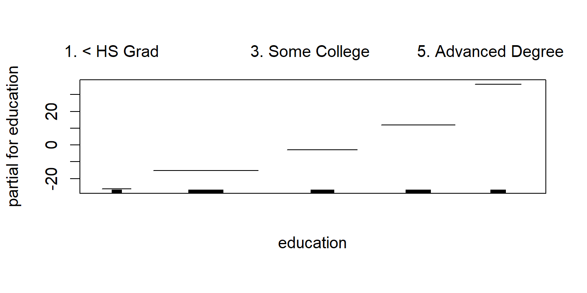
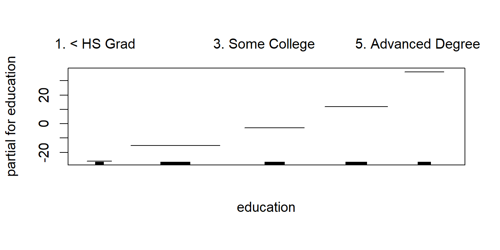

7 Moving Beyond Linearity
Load the packages used in this chapter:
library(tidyverse)
library(tidymodels)
library(broom)
library(gt)
library(patchwork)
library(tictoc)
# Load my R package and set the ggplot theme
library(dunnr)
extrafont::loadfonts(device = "win", quiet = TRUE)
theme_set(theme_td())
set_geom_fonts()
set_palette()In the previous chapter, we saw how to improve upon standard least squares linear regression using ridge regression, the lasso, PCA, and other techniques. In that setting, the complexity of the linear model is reduced to reduce the variance of the estimates. In this chapter, we relax the linearity assumption while still trying to maintain some interpretability, with these methods:
- Polynomial regression extends the linear model by adding extra predictors by raising original predictors to a power.
- Step functions cut the range of a variable into \(K\) distinct regions to produce a qualitative variable.
- Regression splines are a flexible combination of polynomials and step functions that involve polynomial functions fit to data in \(K\) distinct regions.
- Smoothing splines are similar to regression splines but involve a smoothness penalty.
- Local regression is similar to splines but allows smooth overlaps across regions.
- Generalized additive models allows us to extend the above methods to deal with multiple predictors.
7.1 Polynomial Regression
Polynomial regression involves raising one or more predictors to a degree \(d\), each with its own coefficient:
\[ y_i = \beta_0 + \beta_1 x_i + \beta_2 x_i^2 + \beta_3 x_i^3 + \dots + \beta_d x_i^d + \epsilon_i. \]
For a large enough degree \(d\), polynomial regression can produce an extremely non-linear curve, though it is unusual to use \(d\) greater than 3 or 4 because the curve can become overly flexible and produce some strange shapes.
Re-create Figure 7.1 with the wage data:
wage <- ISLR2::Wage
wage_poly_4_linear_fit <- lm(wage ~ poly(age, 4), data = wage)
wage_poly_4_logistic_fit <- glm(I(wage > 250) ~ poly(age, 4),
data = wage, family = binomial)
# Grid of age values for predictions
age_grid <- seq(18, 80, length.out = 63)
p1 <- wage_poly_4_linear_fit %>%
augment(newdata = tibble(age = age_grid), interval = "confidence") %>%
ggplot(aes(x = age)) +
geom_point(data = wage, aes(y = wage),
shape = 21, color = "grey50", alpha = 0.5) +
geom_line(aes(y = .fitted), color = "darkblue", size = 1.5) +
geom_line(aes(y = .lower),
lty = 2, color = "darkblue", size = 1) +
geom_line(aes(y = .upper),
lty = 2, color = "darkblue", size = 1) +
labs(y = "wage")
p2 <- wage_poly_4_logistic_fit %>%
augment(newdata = tibble(age = age_grid),
type.predict = "link", se_fit = TRUE) %>%
mutate(
# Have to compute CIs manually for logistic regression
.lower = .fitted - 1.96 * .se.fit,
.upper = .fitted + 1.96 * .se.fit,
# Convert from log-odds to probability scales
across(c(.fitted, .lower, .upper), ~ exp(.x) / (1 + exp(.x)))
) %>%
ggplot(aes(x = age)) +
geom_rug(data = wage %>% filter(wage > 250),
sides = "t", color = "grey50", alpha = 0.5) +
geom_rug(data = wage %>% filter(wage <= 250),
sides = "b", color = "grey50", alpha = 0.5) +
geom_line(aes(y = .fitted), color = "darkblue", size = 1.5) +
geom_line(aes(y = .lower), lty = 2, color = "darkblue", size = 1) +
geom_line(aes(y = .upper), lty = 2, color = "darkblue", size = 1) +
coord_cartesian(ylim = c(0, 0.2)) +
labs(y = "Pr(wage > 250 | age)")
p1 + p27.2 Step Functions
Using polynomial functions of the features as predictors in a linear model imposes a global structure on the non-linear function of \(X\). We can instead use step functions in order to avoid imposing such a global structure. Here we break the range of \(X\) into bins, and fit a different constant in each bin. This amounts to converting a continuous variable into an ordered categorical variable.
This involves using a set of \(K\) cutpoints \(c_k\) which corresponds to dummy variables \(C_k(X)\):
\[ \begin{align} C_0(X) &= I(X < c_1), \\ C_1(X) &= I(c_1 \leq X < c_2), \\ C_2(X) &= I(c_2 \leq X < c_3), \\ &\vdots \\ C_{K-1}(X) &= I(c_{K-1} \leq X < c_K), \\ C_K(X) &= I(c_K \leq X), \end{align} \]
where \(I()\) is an indicator function that returns a 1 or 0 if the condition is true or false. The least squares linear model is then:
\[ y_i = \beta_0 + \beta_1 C_1(x_i) + \beta_2 C_2 (x_i) + \dots + \beta_K C_K (x_i) + \epsilon_i. \]
To re-create Figure 7.2, Ill use cut with 4 breaks to separate the age predictor:
wage_step_linear_fit <- lm(wage ~ cut(age, breaks = 4), data = wage)
wage_step_logistic_fit <- glm(I(wage > 250) ~ cut(age, breaks = 4),
data = wage, family = binomial)
p1 <- wage_step_linear_fit %>%
augment(newdata = tibble(age = age_grid),
interval = "confidence", level = 0.50) %>%
ggplot(aes(x = age)) +
geom_point(data = wage, aes(y = wage),
shape = 21, color = "grey50", alpha = 0.5) +
geom_line(aes(y = .fitted), color = "darkgreen", size = 1.5) +
geom_line(aes(y = .lower),
lty = 2, color = "darkgreen", size = 1) +
geom_line(aes(y = .upper),
lty = 2, color = "darkgreen", size = 1) +
labs(y = "wage")
p2 <- wage_step_logistic_fit %>%
augment(newdata = tibble(age = age_grid),
type.predict = "link", se_fit = TRUE) %>%
mutate(
.lower = .fitted - 1.96 * .se.fit,
.upper = .fitted + 1.96 * .se.fit,
across(c(.fitted, .lower, .upper), ~ exp(.x) / (1 + exp(.x)))
) %>%
ggplot(aes(x = age)) +
geom_rug(data = wage %>% filter(wage > 250),
sides = "t", color = "grey50", alpha = 0.5) +
geom_rug(data = wage %>% filter(wage <= 250),
sides = "b", color = "grey50", alpha = 0.5) +
geom_line(aes(y = .fitted), color = "darkgreen", size = 1.5) +
geom_line(aes(y = .lower), lty = 2, color = "darkgreen", size = 1) +
geom_line(aes(y = .upper), lty = 2, color = "darkgreen", size = 1) +
coord_cartesian(ylim = c(0, 0.2)) +
labs(y = "Pr(wage > 250 | age)")
p1 + p2Unfortunately, unless there are natural breakpoints in the predictors, piecewise-constant functions can miss the action. For example, in the left- hand panel of Figure 7.2, the first bin clearly misses the increasing trend of
wagewithage. Nevertheless, step function approaches are very popular in biostatistics and epidemiology, among other disciplines. For example, 5-year age groups are often used to define the bins.
7.3 Basis Functions
Polynomial and piecewise-constant regression models are in fact special cases of a basis function approach. The idea is to have at hand a fam ily of functions or transformations that can be applied to a variable \(X\): \(b_1(X), b_2(X), \dots, b_K(X)\). Instead of fitting a linear model in \(X\), we fit the model
\[ y_i = \beta_0 + \beta_1 b_1(x_i) + \beta_2 b_2 (x_i) + \dots + \beta_K b_K (x_i) + \epsilon_i. \]
In polynomial regression, these basis functions were \(b_j(x_i) = x_i^j\). In piecewise-constant regression, they were \(b_j(x_i) = I(c_j \leq x_i < c_{j+1})\). Despite the increased complexity, this still amounts to estimating the unknown regression coefficients \(\beta\), for which all the least squares tools and models apply.
7.4 Regression Splines
7.4.1 Piecewise Polynomials
Instead of fitting a high-degree polynomial over the entire range of \(X\), piecewise polynomial regression involves fitting separate low-degree polynomials over different regions of \(X\). For example, a piecewise cubic polynomial works by fitting a cubic regression model of the form
\[ y_i = \beta_0 + \beta_1 x_i + \beta_2 x_i^2 + \beta_3 x_i^3 + \epsilon_i. \]
where the coefficients \(\beta_0, \beta_1, \beta_2,\) and \(\beta_3\) differ in parts of the range of \(X\). The points where the coefficients change are called knots.
With 0 knots, we have the standard cubic polynomial with \(d = 3\) as described in section 7.1. With a single knot at point \(c\), this takes the form:
\[ \begin{align} y_i &= \beta_{01} + \beta_{11} x_i + \beta_{21} x_i^2 + \beta_{31} x_i^3 + \epsilon_i \ \ \ \text{if} \ \ x_i < c \\ &= \beta_{02} + \beta_{22} x_i + \beta_{22} x_i^2 + \beta_{32} x_i^3 + \epsilon_i \ \ \ \text{if} \ \ x_i \geq c. \end{align} \]
Functionally, this is essentially fitting two separate regression equations on subsets of \(X\), with 8 degrees of freedom for the eight regression coefficients.
7.4.2 Constraints and Splines
The problem with piecewise polynomials is that the resulting fit can be discontinuous, like in the top left panel of Figure 7.3.
To remedy this, we can fit a piecewise polynomial under the constraint that the fitted curve must be continuous, like in the top right panel.
The bottom left panel shows the result of two additional constraints: that the first and second derivative are continuous at age = 50 this is called a cubic spline, which generally has \(K + 4\) degrees of freedom (=5 in this example).
The lower right panel shows a linear spline.
7.4.3 The Spline Basis Representation
In order to implement the continuity constraints for regression splines, we can use the basis model. A cubic spline with \(K\) knots can be modeled as
\[ y_i = \beta_0 + \beta_1 b_1(x_i) + \beta_2 b_2 (x_i) + \dots + \beta_{K+3} b_{K+3} (x_i) + \epsilon_i, \]
for an appropriate choice of basis functions \(b_1, b_2, \dots, b_{K+3}\). The model can then be fit with least squares.
There are many equivalent representations of cubic splines using different basis functions. The most direct is to start with the cubic polynomial and then add one truncated power basis function per knot:
\[ \begin{align} h(x, \xi) = (x - \xi)^2_+ &= (x - \xi)^3 \ \ \ \text{if} \ \ \ x > \xi \\ &= 0 \ \ \ \ \ \ \ \ \ \ \ \ \ \ \text{otherwise}, \end{align} \]
where \(\xi\) is the knot. One can show that adding the term \(\beta_4 h(x, \xi)\) to the cubic spline model above will lead to a discontinuity in only the third derivative at \(\xi\), but remain continuous in the first and second derivatives.
Unfortunately, these splines have high variance at boundaries of the predictors. This can be reduced with natural splines which have additional constraints at the boundaries to produce more stable estimates. We can show this with confidence intervals of the models fit with cubic and natural cubic splines, as in Figure 7.4:
library(splines)
# Use just a subset of the data to mimic the figure
set.seed(20)
d <- wage %>%
filter(wage < 300) %>%
slice_sample(n = 500)
wage_bs_linear_fit <- lm(wage ~ bs(age, knots = c(25, 40, 60)), data = d)
wage_ns_linear_fit <- lm(wage ~ ns(age, knots = c(25, 40, 60)), data = d)
bind_rows(
wage_bs_linear_fit %>%
augment(newdata = tibble(age = age_grid), interval = "confidence") %>%
mutate(model = "Cubic spline"),
wage_ns_linear_fit %>%
augment(newdata = tibble(age = age_grid), interval = "confidence") %>%
mutate(model = "Natural cubic spline")
) %>%
mutate(model = fct_rev(model)) %>%
ggplot(aes(x = age)) +
geom_point(data = d, aes(y = wage),
shape = 21, color = "grey50", alpha = 0.5) +
geom_line(aes(y = .fitted, color = model), size = 1.5) +
geom_line(aes(y = .lower, color = model), lty = 2, size = 1) +
geom_line(aes(y = .upper, color = model), lty = 2, size = 1) +
geom_vline(xintercept = c(25, 40, 60), lty = 2) +
coord_cartesian(ylim = c(40, 300)) +
theme(legend.position = c(0.7, 0.9)) +
labs(color = NULL)7.4.4 Choosing the Number and Locations of the Knots
When we fit a spline, where should we place the knots? The regression spline is most flexible in regions that contain a lot of knots, because in those regions the polynomial coefficients can change rapidly. Hence, one option is to place more knots in places where we feel the function might vary most rapidly, and to place fewer knots where it seems more stable. While this option can work well, in practice it is common to place knots in a uniform fashion. One way to do this is to specify the desired degrees of freedom, and then have the software automatically place the corresponding number of knots at uniform quantiles of the data.
The splines::ns() function, when provided the df argument, computes knot locations based on percentiles.
For the age data and df = 4 (3 knots):
age_ns <- ns(wage$age, df = 4)
attr(age_ns, "knots")## 25% 50% 75%
## 33.75 42.00 51.00Fit the model and re-create Figure 7.5:
wage_ns_linear_fit <- lm(wage ~ ns(age, df = 4), data = wage)
wage_ns_logistic_fit <- glm(I(wage > 250) ~ ns(age, df = 4),
data = wage, family = binomial)
p1 <- wage_ns_linear_fit %>%
augment(newdata = tibble(age = age_grid), interval = "confidence") %>%
ggplot(aes(x = age)) +
geom_point(data = wage, aes(y = wage),
shape = 21, color = "grey50", alpha = 0.5) +
geom_line(aes(y = .fitted), color = "red", size = 1.5) +
geom_line(aes(y = .lower), color = "red", lty = 2, size = 1) +
geom_line(aes(y = .upper), color = "red", lty = 2, size = 1) +
geom_vline(xintercept = attr(age_ns, "knots"), lty = 2)
p2 <- wage_ns_logistic_fit %>%
augment(newdata = tibble(age = age_grid),
type.predict = "link", se_fit = TRUE) %>%
mutate(
.lower = .fitted - 1.96 * .se.fit,
.upper = .fitted + 1.96 * .se.fit,
across(c(.fitted, .lower, .upper), ~ exp(.x) / (1 + exp(.x)))
) %>%
ggplot(aes(x = age)) +
geom_rug(data = wage %>% filter(wage > 250),
sides = "t", color = "grey50", alpha = 0.5) +
geom_rug(data = wage %>% filter(wage <= 250),
sides = "b", color = "grey50", alpha = 0.5) +
geom_line(aes(y = .fitted), color = "red", size = 1.5) +
geom_line(aes(y = .lower), lty = 2, color = "red", size = 1) +
geom_line(aes(y = .upper), lty = 2, color = "red", size = 1) +
geom_vline(xintercept = attr(age_ns, "knots"), lty = 2) +
coord_cartesian(ylim = c(0, 0.2)) +
labs(y = "Pr(wage > 250 | age)")
p1 + p2The automatic choice of knot location is usually sufficient, but how do we decide on the number of knots \(K\)?
The same way we usually choose model hyperparameters: resampling.
For this, we turn to tidymodels, which has step_bs() and step_ns() functions for specifying basis splines and natural basis splines.
set.seed(93)
wage_resamples <- vfold_cv(wage, v = 10)
wage_lm_bs_rec <- recipe(wage ~ age, data = wage) %>%
step_bs(age, deg_free = tune(), degree = tune())
wage_lm_ns_rec <- recipe(wage ~ age, data = wage) %>%
step_ns(age, deg_free = tune())
lm_spec <- linear_reg()
wage_lm_bs_workflow <- workflow() %>%
add_model(lm_spec) %>%
add_recipe(wage_lm_bs_rec)
wage_lm_ns_workflow <- workflow() %>%
add_model(lm_spec) %>%
add_recipe(wage_lm_ns_rec)If I understand Figure 7.6 correctly, the results being displayed in the right panel arent all cubic splines because those models cant have <3 degrees of freedom.
For example, if I set degrees of freedom to df = 2 and the polynomial degree of freedom to degree = 3, then bs() will calculate a negative number of knots.
It will automatically adjust df so the number of knots equals 0 and return a warning:
lm(wage ~ bs(age, df = 2, degree = 3), data = wage)## Warning in bs(age, df = 2, degree = 3): 'df' was too small; have used 3##
## Call:
## lm(formula = wage ~ bs(age, df = 2, degree = 3), data = wage)
##
## Coefficients:
## (Intercept) bs(age, df = 2, degree = 3)1
## 58.69 102.64
## bs(age, df = 2, degree = 3)2 bs(age, df = 2, degree = 3)3
## 48.76 40.80So in choosing the hyperparameters for these models, I will vary both deg_free and degree so that it fits a linear spline, quadratic spline, and 7 cubic splines (with varying numbers of knots) as follows:
bs_df_grid <- bind_rows(
tibble(deg_free = 1:3, degree = 1:3),
tibble(deg_free = 4:10, degree = 3)
)
bs_df_grid## # A tibble: 10 x 2
## deg_free degree
## <int> <dbl>
## 1 1 1
## 2 2 2
## 3 3 3
## 4 4 3
## 5 5 3
## 6 6 3
## 7 7 3
## 8 8 3
## 9 9 3
## 10 10 3wage_lm_bs_tune <- tune_grid(
wage_lm_bs_workflow, resamples = wage_resamples,
grid = bs_df_grid
)The way degrees of freedom work in natural splines doesnt require this adjustment, I can just provide deg_free = 1:10:
wage_lm_ns_tune <- tune_grid(
wage_lm_ns_workflow, resamples = wage_resamples,
grid = bs_df_grid %>% select(deg_free)
)Finally, re-create Figure 7.6:
p1 <- collect_metrics(wage_lm_ns_tune) %>%
filter(.metric == "rmse") %>%
mutate(mse = mean^2) %>%
ggplot(aes(x = deg_free, y = mse)) +
geom_line(color = "red") +
geom_point(fill = "red", color = "white", shape = 21, size = 3) +
scale_x_continuous("Degrees of freedom of natural spline",
breaks = seq(2, 10, 2)) +
labs(y = "Mean squared error")
p2 <- collect_metrics(wage_lm_bs_tune) %>%
filter(.metric == "rmse") %>%
mutate(mse = mean^2) %>%
ggplot(aes(x = deg_free, y = mse)) +
geom_line(color = "blue") +
geom_point(fill = "blue", color = "white", shape = 21, size = 3) +
scale_x_continuous("Degrees of freedom of cubic spline",
breaks = seq(2, 10, 2)) +
labs(y = NULL)
p1 + p2
7.4.5 Comparison to Polynomial Regression
Figure 7.7 compares a natural cubic spline with 15 degrees of freedom to a 15-degree polynomial regression on the wage data:
wage_ns_15_fit <- lm(wage ~ ns(age, df = 15), data = wage)
wage_poly_15_fit <- lm(wage ~ poly(age, degree = 15), data = wage)
bind_rows(
wage_ns_15_fit %>%
augment(newdata = tibble(age = age_grid)) %>%
mutate(model = "Natural cubic spline"),
wage_poly_15_fit %>%
# Extend the age range a bit to see more of the fit
augment(newdata = tibble(age = c(age_grid, 80.5))) %>%
mutate(model = "Polynomial")
) %>%
ggplot(aes(x = age)) +
geom_point(data = wage, aes(y = wage),
shape = 21, color = "grey50", alpha = 0.5) +
geom_line(aes(y = .fitted, color = model), size = 1.5) +
theme(legend.position = c(0.8, 0.8)) +
labs(color = NULL)
The extra flexibility in the polynomial produces undesirable results at the boundaries, while the natural cubic spline still provides a reasonable fit to the data. Regression splines often give superior results to polynomial regression. This is because unlike polynomials, which must use a high degree (exponent in the highest monomial term, e.g.\(X^15\)) to produce flexible fits, splines introduce flexibility by increasing the number of knots but keeping the degree fixed. Generally, this approach produces more stable estimates. Splines also allow us to place more knots, and hence flexibility, over regions where the function \(f\) seems to be changing rapidly, and fewer knots where \(f\) appears more stable.
7.5 Smoothing Splines
7.5.1 An Overview of Smoothing Splines
To fit a curve \(g(x)\) to a set of data, we want \(\text{RSS} = \sum_{i=1}^n (y_i - g(x_i))^2\) to be small. If there are no constraints on \(g(x)\), however, then it will simply overfit the data completely for \(\text{RSS} = 0\).
There are a number of ways to ensure that \(g\) is smooth. One way is to find \(g\) that minimizes
\[ \text{RSS} + \lambda \int g'' (t)^2 dt \]
where \(\lambda\) is a non-negative penalty parameter (that will control the bias-variance trade-off as weve seen before). The function \(g\) that minimizes the above is known as a smoothing spline. By placing the constraint on the second derivative \(g''\), we encourage \(g\) to be smooth.
It turns out that the optimal \(g(x)\) is a natural cubic polynomial with knots at unique values of \(x\) (and continuous first and second derivatives at each knot). However, it is not the same one we would get with the basis function approach in Section 7.4.3 with knots at each value of \(x\) rather, it is a shrunken version of that spline, where \(\lambda\) controls the level of shrinkage
7.5.2 Choosing the Smoothing Parameter \(\lambda\)
It may seem like a smoothing spline, with knots at every unique value of \(x_i\), will have far too many degrees of freedom, but the tuning parameter \(\lambda\) controls the effective degrees of freedom \(df_{\lambda}\). The higher \(df_{\lambda}\), the more flexible (lower bias, higher variance) the smoothing spline.
Unlike the other spline methods, we do not need to select the number or location of the knots. We instead have to choose the value of \(\lambda\), usually via cross-validation. It turns out that the LOOCV error can be computed very efficiecntly for smoothing splines, with essentially the same cost as computing a single fit, with this formula:
\[ \text{RSS}_{cv} (\lambda) = \sum_{i=1}^n (y_i - \hat{g}_{\lambda}^{(-i)} (x_i))^2 = \sum_{i=1}^n \left[\frac{y_i - \hat{g}_{\lambda}(x_i)}{1 - \{\textbf{S}_{\lambda}\}_{ii}}\right]. \] where \(\hat{g}_{\lambda}^{(-i)}\) is the fitted value for this smoothing spline evaluated at \(x_i\), with the fit using all training observations expert for \((x_i, y_i)\).
In contrast, \(\hat{g}_{\lambda}(x_i)\) indicates the smoothing spline function fit to all of the training observations and evaluated at \(x_i\). This remarkable formula says that we can compute each of these leave- one-out fits using only \(\hat{g}_{\lambda}\), the original fit to all of the data! We have a very similar formula (5.2) on page 202 in Chapter 5 for least squares linear regression. Using (5.2), we can very quickly perform LOOCV for the regression splines discussed earlier in this chapter, as well as for least squares regression using arbitrary basis functions.
The smooth.spline() function fits a cubic smoothing spline to data as follows:
wage_smooth_df_16 <- smooth.spline(x = wage$age, y = wage$wage, df = 16)
wage_smooth_df_16## Call:
## smooth.spline(x = wage$age, y = wage$wage, df = 16)
##
## Smoothing Parameter spar= 0.4732071 lambda= 0.0006537868 (13 iterations)
## Equivalent Degrees of Freedom (Df): 16.00237
## Penalized Criterion (RSS): 61597.01
## GCV: 1599.69wage_smooth_cv <- smooth.spline(x = wage$age, y = wage$wage, cv = TRUE)## Warning in smooth.spline(x = wage$age, y = wage$wage, cv = TRUE): cross-
## validation with non-unique 'x' values seems doubtfulwage_smooth_cv## Call:
## smooth.spline(x = wage$age, y = wage$wage, cv = TRUE)
##
## Smoothing Parameter spar= 0.6988943 lambda= 0.02792303 (12 iterations)
## Equivalent Degrees of Freedom (Df): 6.794596
## Penalized Criterion (RSS): 75215.9
## PRESS(l.o.o. CV): 1593.383bind_rows(
as_tibble(predict(wage_smooth_df_16, age_grid)) %>%
mutate(model = "16 degrees of freedom"),
as_tibble(predict(wage_smooth_cv, age_grid)) %>%
mutate(model = "6.8 degrees of freedom (LOOCV)")
) %>%
ggplot() +
geom_point(data = wage, aes(x = age, y = wage),
shape = 21, color = "grey50", alpha = 0.5) +
geom_line(aes(x = x, y = y, color = model), size = 1.5) +
theme(legend.position = c(0.7, 0.7)) +
labs(color = NULL)
The red curve indicates the fit obtained from pre-specifying that we would like a smoothing spline with 16 effective degrees of freedom. The blue curve is the smoothing spline obtained when \(\lambda\) is chosen using LOOCV; in this case, the value of \(\lambda\) chosen results in 6.8 effective degrees of freedom (computed using (7.13)). For this data, there is little discernible difference between the two smoothing splines, beyond the fact that the one with 16 degrees of freedom seems slightly wigglier. Since there is little difference between the two fits, the smoothing spline fit with 6.8 degrees of freedom is preferable, since in general simpler models are better unless the data provides evidence in support of a more complex model.
7.6 Local Regression {#local-regression{}}
Local regression involves computing the fit at a target point \(x_0\) using just the nearby (local) training observations. It involves a number of choices, such the weighting function \(K\), and whether to fit a linear, constant or quadratic regression. The most important choice is the span \(s\) which is the proportion of points used to compute the local regression at \(x_0\). It is analogous to \(\lambda\) in smoothing splines: the smaller the value \(s\), the more local and flexible the fit; the larger the value, the less flexible.
wage_local_s_0.2 <- loess(wage ~ age, data = wage, span = 0.2)
wage_local_s_0.7 <- loess(wage ~ age, data = wage, span = 0.7)
wage_local_s_0.2; wage_local_s_0.7## Call:
## loess(formula = wage ~ age, data = wage, span = 0.2)
##
## Number of Observations: 3000
## Equivalent Number of Parameters: 16.42
## Residual Standard Error: 39.92## Call:
## loess(formula = wage ~ age, data = wage, span = 0.7)
##
## Number of Observations: 3000
## Equivalent Number of Parameters: 5.3
## Residual Standard Error: 39.9bind_rows(
augment(wage_local_s_0.2, newdata = tibble(age = age_grid)) %>%
mutate(model = "Span is 0.2 (16.4 degres of freedom)"),
augment(wage_local_s_0.7, newdata = tibble(age = age_grid)) %>%
mutate(model = "Span is 0.7 (5.3 degres of freedom)")
) %>%
ggplot(aes(x = age)) +
geom_point(data = wage, aes(y = wage),
shape = 21, color = "grey50", alpha = 0.5) +
geom_line(aes(y = .fitted, color = model), size = 1.5) +
theme(legend.position = c(0.5, 0.7)) +
labs(color = NULL)
7.7 Generalized Additive Models
In previous sections, we have presented approaches for flexibly predicting a response \(Y\) with a single predictor \(X\). Generalized additive models (GAMs) provide a general framework for extending a standard linear model by allowing non-linear functions of each of the variables, while maintaining additivity.
7.7.1 GAMs for Regression Problems
To extend the multiple linear regression model, we replace the coefficient components \(\beta_j x_{ij}\) with smoth non-linear functions \(f_j (x_{ij})\):
\[ y_i = \beta_0 + f_1 (x_{i1}) + f_2 (x_{i2}) + \dots + f_p (x_{ip}) + \epsilon_i. \]
Consider the task of fitting the model:
\[ \texttt{wage} = \beta_0 + f_1(\texttt{year}) + f_2 (\texttt{age}) + f_3 (\texttt{education}) + \epsilon. \]
In the example in Figure 7.11, the quantitative variables year and age are fit using natural splines, and the qualitative variable (with 5 levels) education is fit via the usual dummy variable approach.
wage_gam_ns_fit <- lm(wage ~ ns(year, 4) + ns(age, 5) + education, data = wage)
# Though the model wasn't fit with `gam::gam()`, we can still use the
# `gam::plot.Gam()` function on the `lm` object to retrieve the smooth functions
d <- gam::plot.Gam(wage_gam_ns_fit, se = TRUE, col = "red") 

d <- map(
d$preplot,
~ tibble(x = .$x, y = .$y, y_se = .$se.y, xlab = .$xlab, ylab = .$ylab) %>%
mutate(y_lower = y - y_se, y_upper = y + y_se)
)
p1 <- d$`ns(year, 4)` %>%
ggplot(aes(x)) +
geom_line(aes(y = y), color = "red") +
geom_line(aes(y = y_lower), lty = 2, color = "red") +
geom_line(aes(y = y_upper), lty = 2, color = "red") +
labs(x = NULL, title = d$`ns(year, 4)`$ylab, y = NULL) +
ylim(c(-20, 20))
p2 <- d$`ns(age, 5)` %>%
ggplot(aes(x)) +
geom_line(aes(y = y), color = "red") +
geom_line(aes(y = y_lower), lty = 2, color = "red") +
geom_line(aes(y = y_upper), lty = 2, color = "red") +
labs(x = NULL, title = d$`ns(age, 5)`$ylab, y = NULL)
p3 <- d$education %>%
ggplot(aes(x)) +
geom_errorbar(aes(y = y, ymin = y_lower, ymax = y_upper)) +
labs(x = NULL, title = d$education$ylab, y = NULL) +
theme(axis.text.x = element_text(angle = 45, size = 8, vjust = 0.7))
p1 + p2 + p3For Figure 7.12, we use the gam package and specify smoothing splines:
library(gam)
wage_gam_smooth_fit <-
gam(wage ~ s(year, 4) + s(age, 5) + education,
data = wage)
d <- plot(wage_gam_smooth_fit, se = TRUE, col = "blue")

d <- map(
d$preplot,
~ tibble(x = .$x, y = .$y, y_se = .$se.y, xlab = .$xlab, ylab = .$ylab) %>%
mutate(y_lower = y - y_se, y_upper = y + y_se)
)
p1 <- d$`s(year, 4)` %>%
ggplot(aes(x)) +
geom_line(aes(y = y), color = "blue") +
geom_line(aes(y = y_lower), lty = 2, color = "blue") +
geom_line(aes(y = y_upper), lty = 2, color = "blue") +
labs(x = NULL, title = d$`s(year, 4)`$ylab, y = NULL) +
ylim(c(-20, 20))
p2 <- d$`s(age, 5)` %>%
ggplot(aes(x)) +
geom_line(aes(y = y), color = "blue") +
geom_line(aes(y = y_lower), lty = 2, color = "blue") +
geom_line(aes(y = y_upper), lty = 2, color = "blue") +
labs(x = NULL, title = d$`s(age, 5)`$ylab, y = NULL)
p3 <- d$education %>%
ggplot(aes(x)) +
geom_errorbar(aes(y = y, ymin = y_lower, ymax = y_upper)) +
labs(x = NULL, title = d$education$ylab, y = NULL) +
theme(axis.text.x = element_text(angle = 45, size = 8, vjust = 0.7))
p1 + p2 + p3
The fitted functions are essentially equivalent between the natural and smoothing splines.
Fitting a GAM with a smoothing spline is not quite as simple as fitting a GAM with a natural spline, since in the case of smoothing splines, least squares cannot be used. However, standard software such as the
gam()function in R can be used to fit GAMs using smoothing splines, via an approach known as backfitting. This method fits a model involving multiple predictors by backfitting repeatedly updating the fit for each predictor in turn, holding the others fixed. The beauty of this approach is that each time we update a function, we simply apply the fitting method for that variable to a partial residual.
We do not have to use splines as the building blocks for GAMs: we can just as well use local regression, polynomial regression, or any combination of the approaches seen earlier in this chapter in order to create a GAM.
Pros and Cons of GAMs
Pros:
- GAMs allow \(f_j\) fits to each \(X_j\), which is a way to flexibly and (nearly) automatically capture non-linearity.
- Non-linear fits can improve prediction accuracy.
- Because the models are additive, we can examine the effect of each \(X_j\) on \(Y\) separately, while holding others fixed.
- Smoothness of each \(f_j\) can be summarized via degrees of freedom.
Cons:
- The main limitation is the additive restriction. We cannot add interaction terms like \(X_j \times X_k\) to GAMs.
GAMs provide as useful compromise between linear and fully non-parametric models.
7.7.2 GAMs for Classification Problems
GAMs are easily extended to other response distributions via the family argument, such as binomial for logistic regression classification.
wage_gam_fit_binom <- gam(
I(wage > 250) ~ year + s(age, 5) + education,
family = binomial, data = wage
)
d <- plot(wage_gam_fit_binom)

d <- map(
d$preplot,
~ tibble(x = .$x, y = .$y, y_se = .$se.y, xlab = .$xlab, ylab = .$ylab) %>%
mutate(y_lower = y - y_se, y_upper = y + y_se)
)
p1 <- d$year %>%
ggplot(aes(x)) +
geom_line(aes(y = y), color = "green") +
geom_line(aes(y = y_lower), lty = 2, color = "green") +
geom_line(aes(y = y_upper), lty = 2, color = "green") +
labs(x = NULL, title = d$`s(year, 4)`$ylab, y = NULL) +
ylim(c(-4, 4))
p2 <- d$`s(age, 5)` %>%
ggplot(aes(x)) +
geom_line(aes(y = y), color = "green") +
geom_line(aes(y = y_lower), lty = 2, color = "green") +
geom_line(aes(y = y_upper), lty = 2, color = "green") +
labs(x = NULL, title = d$`s(age, 5)`$ylab, y = NULL)
p3 <- d$education %>%
ggplot(aes(x)) +
geom_errorbar(aes(y = y, ymin = y_lower, ymax = y_upper)) +
labs(x = NULL, title = d$education$ylab, y = NULL) +
theme(axis.text.x = element_text(angle = 45, size = 8, vjust = 0.7))
p1 + p2 + p3
There are 0 occurrences of wage > 250 for education = "1. < HS Grad", which is causing very wide SE range.
Re-fit the model excluding that value of education:
wage_gam_fit_binom <- gam(
I(wage > 250) ~ year + s(age, 5) + education,
family = binomial, data = filter(wage, education != "1. < HS Grad")
)
d <- plot(wage_gam_fit_binom)


d <- map(
d$preplot,
~ tibble(x = .$x, y = .$y, y_se = .$se.y, xlab = .$xlab, ylab = .$ylab) %>%
mutate(y_lower = y - y_se, y_upper = y + y_se)
)
p1 <- d$year %>%
ggplot(aes(x)) +
geom_line(aes(y = y), color = "green") +
geom_line(aes(y = y_lower), lty = 2, color = "green") +
geom_line(aes(y = y_upper), lty = 2, color = "green") +
labs(x = NULL, title = d$year$ylab, y = NULL) +
ylim(c(-4, 4))
p2 <- d$`s(age, 5)` %>%
ggplot(aes(x)) +
geom_line(aes(y = y), color = "green") +
geom_line(aes(y = y_lower), lty = 2, color = "green") +
geom_line(aes(y = y_upper), lty = 2, color = "green") +
labs(x = NULL, title = d$`s(age, 5)`$ylab, y = NULL)
p3 <- d$education %>%
ggplot(aes(x)) +
geom_errorbar(aes(y = y, ymin = y_lower, ymax = y_upper)) +
labs(x = NULL, title = d$education$ylab, y = NULL) +
theme(axis.text.x = element_text(angle = 45, size = 8, vjust = 0.7))
p1 + p2 + p3
7.8 Lab: Non-linear Modeling
7.8.1 Polynomial Regression and Step Functions
The figure was re-produced here: 7.1.
To determine the simplest sufficient polynomial model, we can perform \(F\)-tests with anova().
wage_poly_1_linear_fit <- lm(wage ~ age, data = wage)
wage_poly_2_linear_fit <- lm(wage ~ poly(age, 2), data = wage)
wage_poly_3_linear_fit <- lm(wage ~ poly(age, 3), data = wage)
wage_poly_5_linear_fit <- lm(wage ~ poly(age, 5), data = wage)
anova(wage_poly_1_linear_fit, wage_poly_2_linear_fit,
wage_poly_3_linear_fit, wage_poly_4_linear_fit,
wage_poly_5_linear_fit)## Analysis of Variance Table
##
## Model 1: wage ~ age
## Model 2: wage ~ poly(age, 2)
## Model 3: wage ~ poly(age, 3)
## Model 4: wage ~ poly(age, 4)
## Model 5: wage ~ poly(age, 5)
## Res.Df RSS Df Sum of Sq F Pr(>F)
## 1 2998 5022216
## 2 2997 4793430 1 228786 143.5931 < 2.2e-16 ***
## 3 2996 4777674 1 15756 9.8888 0.001679 **
## 4 2995 4771604 1 6070 3.8098 0.051046 .
## 5 2994 4770322 1 1283 0.8050 0.369682
## ---
## Signif. codes: 0 '***' 0.001 '**' 0.01 '*' 0.05 '.' 0.1 ' ' 1The cubic fit is probably the best choice here.
Equivalently, because of the way poly() created orthogonalized polynomials, we can get the same \(p\)-values and \(F\)-statistics (= square of the \(t\)-statistics) like this:
tidy(wage_poly_5_linear_fit) %>%
transmute(term, t = statistic, `F` = t^2, p = scales::pvalue(p.value)) %>%
gt() %>%
fmt_number(columns = c(t, `F`), n_sigfig = 4)| term | t | F | p |
|---|---|---|---|
| (Intercept) | 153.3 | 23,490 | <0.001 |
| poly(age, 5)1 | 11.20 | 125.4 | <0.001 |
| poly(age, 5)2 | −11.98 | 143.6 | <0.001 |
| poly(age, 5)3 | 3.145 | 9.889 | 0.002 |
| poly(age, 5)4 | −1.952 | 3.810 | 0.051 |
| poly(age, 5)5 | −0.8972 | 0.8050 | 0.370 |
However, this only works because the polynomials are orthogonal and there is just the one predictor.
Otherwise, anova() must be used for these model comparisons.
The step function was fit and visualized here: 7.2.
7.8.2 Splines
The cubic spline and natural spline fits are shown in 7.4.3 and 7.4.4. The smoothing spline fits are shown here: 7.5.2.
#wage_smooth_df_16The tidymodels implementation of smooth splines and GAMs uses the mgcv package as the default (and currently only) engine, so Ill use that for this example:
See some examples in the parsnip documentation [here]
(https://parsnip.tidymodels.org/articles/Examples.html?q=additiv#gen_additive_mod-models)
and [here]
(https://parsnip.tidymodels.org/reference/details_gen_additive_mod_mgcv.html?q=gen_additive#model-fitting).
An example of tuning degrees of freedom can be found here.
wage_smooth_fit_16 <-
as_tibble(predict(wage_smooth_df_16, age_grid)) %>%
mutate(model = "smooth.spline()") %>%
rename(age = x, .fitted = y)
detach("package:mgcv", unload = TRUE)
library(gam)
wage_gam_fit_16 <- gam(wage ~ s(age, df = 16), data = wage)
wage_gam_fit_16_pred <-
augment(wage_gam_fit_16, newdata = tibble(age = age_grid)) %>%
mutate(model = "gam()")
detach("package:gam", unload = TRUE)
library(mgcv)
wage_mgcv_fit_16 <- gam(wage ~ s(age, k = 16, fx = TRUE), data = wage)
wage_mgcv_fit_16_pred <-
augment(wage_mgcv_fit_16, newdata = tibble(age = age_grid)) %>%
mutate(model = "mgcv()")
wage_tidymodels_fit <- gen_additive_mod(select_features = FALSE, adjust_deg_free = 6) %>%
set_engine("mgcv") %>%
set_mode("regression") %>%
fit(wage ~ s(age, k = 16, fx = TRUE), data = wage)
wage_tidymodels_fit_pred <-
augment(wage_tidymodels_fit, new_data = tibble(age = age_grid)) %>%
mutate(model = "tidymodels")
bind_rows(
# wage_smooth_fit_16,
# wage_gam_fit_16_pred,
wage_mgcv_fit_16_pred,
wage_tidymodels_fit_pred
) %>%
ggplot(aes(x = age)) +
# geom_point(data = wage, aes(x = age, y = wage),
# shape = 21, color = "grey50", alpha = 0.5) +
geom_line(aes(y = .fitted, color = model), size = 1.5, alpha = 0.5) +
theme(legend.position = c(0.7, 0.7)) +
labs(color = NULL)
#facet_wrap(~ model)gam_spec <- gen_additive_mod(select_features = FALSE, adjust_deg_free = tune()) %>%
set_engine(engine = 'mgcv') %>%
set_mode('regression')
wage_gam_workflow <- workflow() %>%
add_model(gam_spec) %>%
add_recipe()
wage_resamples
fit_resamples(object = )
wage_tidymodels_fit <- gen_additive_mod(select_features = FALSE, adjust_deg_free = 6) %>%
set_engine("mgcv") %>%
set_mode("regression") %>%
fit(wage ~ s(age, k = 16, fx = TRUE), data = wage)
# fitting gam model
gam_mod <- fit(gam_spec, interest_rate ~ s(annual_income) + s(debt_to_income) + s(delinq_2y), data = loans)7.8.3 Local regression
Reproducibility
Sys.time()## [1] "2022-04-15 16:19:51 AST"if ("git2r" %in% installed.packages()) {
if (git2r::in_repository()) {
git2r::repository()
}
}## Local: main C:/Users/tdunn/Documents/learning/islr-tidy
## Remote: main @ origin (https://github.com/taylordunn/islr-tidy)
## Head: [efec28a] 2022-04-15: Working on the labsessioninfo::session_info()## - Session info ---------------------------------------------------------------
## setting value
## version R version 4.1.3 (2022-03-10)
## os Windows 10 x64
## system x86_64, mingw32
## ui RTerm
## language (EN)
## collate English_Canada.1252
## ctype English_Canada.1252
## tz America/Curacao
## date 2022-04-15
##
## - Packages -------------------------------------------------------------------
## package * version date lib
## abind 1.4-5 2016-07-21 [1]
## assertthat 0.2.1 2019-03-21 [1]
## backports 1.2.1 2020-12-09 [1]
## base64enc 0.1-3 2015-07-28 [1]
## bayestestR 0.10.5 2021-07-26 [1]
## BiocParallel 1.28.3 2021-12-09 [1]
## bit 4.0.4 2020-08-04 [1]
## bit64 4.0.5 2020-08-30 [1]
## bookdown 0.24 2021-09-02 [1]
## boot 1.3-28 2021-05-03 [2]
## broom * 0.7.10 2021-10-31 [1]
## bslib 0.2.5.1 2021-05-18 [1]
## cachem 1.0.6 2021-08-19 [1]
## car 3.0-12 2021-11-06 [1]
## carData 3.0-4 2020-05-22 [1]
## cellranger 1.1.0 2016-07-27 [1]
## checkmate 2.0.0 2020-02-06 [1]
## class 7.3-20 2022-01-16 [2]
## cli 3.2.0 2022-02-14 [1]
## coda 0.19-4 2020-09-30 [1]
## codetools 0.2-18 2020-11-04 [2]
## colorspace 2.0-3 2022-02-21 [1]
## combinat 0.0-8 2012-10-29 [1]
## conflicted 1.0.4 2019-06-21 [1]
## corpcor 1.6.10 2021-09-16 [1]
## corrr * 0.4.3 2020-11-24 [1]
## crayon 1.5.1 2022-03-26 [1]
## datawizard 0.1.0 2021-06-18 [1]
## DBI 1.1.2 2021-12-20 [1]
## dbplyr 2.1.1 2021-04-06 [1]
## DEoptimR 1.0-9 2021-05-24 [1]
## dials * 0.0.10 2021-09-10 [1]
## DiceDesign 1.9 2021-02-13 [1]
## digest 0.6.29 2021-12-01 [1]
## discrim * 0.1.3 2021-07-21 [1]
## distill 1.3 2021-10-13 [1]
## distributional 0.2.2 2021-02-02 [1]
## doParallel * 1.0.16 2020-10-16 [1]
## downlit 0.4.0 2021-10-29 [1]
## dplyr * 1.0.8 2022-02-08 [1]
## dunnr * 0.2.5 2022-01-15 [1]
## effectsize 0.4.5 2021-05-25 [1]
## ellipse 0.4.2 2020-05-27 [1]
## ellipsis 0.3.2 2021-04-29 [1]
## emmeans 1.7.0 2021-09-29 [1]
## equatiomatic 0.2.0 2021-01-30 [1]
## estimability 1.3 2018-02-11 [1]
## evaluate 0.14 2019-05-28 [1]
## extrafont 0.17 2014-12-08 [1]
## extrafontdb 1.0 2012-06-11 [1]
## fansi 1.0.3 2022-03-24 [1]
## farver 2.1.0 2021-02-28 [1]
## fastmap 1.1.0 2021-01-25 [1]
## forcats * 0.5.1 2021-01-27 [1]
## foreach * 1.5.2 2022-02-02 [1]
## fs 1.5.2 2021-12-08 [1]
## furrr 0.2.3 2021-06-25 [1]
## future 1.24.0 2022-02-19 [1]
## future.apply 1.8.1 2021-08-10 [1]
## gam * 1.20.1 2022-03-14 [1]
## generics 0.1.2 2022-01-31 [1]
## GGally 2.1.2 2021-06-21 [1]
## ggdist * 3.0.0 2021-07-19 [1]
## ggplot2 * 3.3.5 2021-06-25 [1]
## ggrepel 0.9.1 2021-01-15 [1]
## ggridges 0.5.3 2021-01-08 [1]
## git2r 0.28.0 2021-01-10 [1]
## glmnet * 4.1-3 2021-11-02 [1]
## globals 0.14.0 2020-11-22 [1]
## glue 1.6.2 2022-02-24 [1]
## gower 0.2.2 2020-06-23 [1]
## GPfit 1.0-8 2019-02-08 [1]
## gridExtra 2.3 2017-09-09 [1]
## gt * 0.3.1 2021-08-07 [1]
## gtable 0.3.0 2019-03-25 [1]
## hardhat 0.2.0 2022-01-24 [1]
## haven 2.4.1 2021-04-23 [1]
## here * 1.0.1 2020-12-13 [1]
## highr 0.9 2021-04-16 [1]
## hms 1.1.1 2021-09-26 [1]
## htmltools 0.5.2 2021-08-25 [1]
## httpuv 1.6.5 2022-01-05 [1]
## httr 1.4.2 2020-07-20 [1]
## igraph 1.2.11 2022-01-04 [1]
## infer * 1.0.0 2021-08-13 [1]
## insight 0.14.2 2021-06-22 [1]
## ipred 0.9-12 2021-09-15 [1]
## ISLR2 * 1.3-1 2022-01-10 [1]
## iterators * 1.0.14 2022-02-05 [1]
## janitor 2.1.0 2021-01-05 [1]
## jquerylib 0.1.4 2021-04-26 [1]
## jsonlite 1.7.3 2022-01-17 [1]
## kknn 1.3.1 2016-03-26 [1]
## klaR 0.6-15 2020-02-19 [1]
## knitr 1.37 2021-12-16 [1]
## labeling 0.4.2 2020-10-20 [1]
## labelled 2.8.0 2021-03-08 [1]
## later 1.3.0 2021-08-18 [1]
## lattice * 0.20-45 2021-09-22 [2]
## lava 1.6.10 2021-09-02 [1]
## leaps * 3.1 2020-01-16 [1]
## lhs 1.1.1 2020-10-05 [1]
## lifecycle 1.0.1 2021-09-24 [1]
## listenv 0.8.0 2019-12-05 [1]
## lubridate 1.8.0 2021-10-07 [1]
## magrittr 2.0.2 2022-01-26 [1]
## MASS * 7.3-55 2022-01-16 [2]
## Matrix * 1.4-0 2021-12-08 [2]
## matrixStats 0.61.0 2021-09-17 [1]
## memoise 2.0.1 2021-11-26 [1]
## MetBrewer 0.1.0 2022-01-05 [1]
## mgcv 1.8-40 2022-03-29 [1]
## mime 0.12 2021-09-28 [1]
## miniUI 0.1.1.1 2018-05-18 [1]
## mixOmics * 6.19.3 2022-04-04 [1]
## modeldata * 0.1.1 2021-07-14 [1]
## modelr 0.1.8 2020-05-19 [1]
## munsell 0.5.0 2018-06-12 [1]
## mvtnorm * 1.1-3 2021-10-08 [1]
## nlme 3.1-155 2022-01-16 [2]
## nnet 7.3-17 2022-01-16 [2]
## parallelly 1.30.0 2021-12-17 [1]
## parameters 0.14.0 2021-05-29 [1]
## parsnip * 0.1.7 2021-07-21 [1]
## patchwork * 1.1.1 2020-12-17 [1]
## performance 0.7.3 2021-07-21 [1]
## pillar 1.7.0 2022-02-01 [1]
## pkgconfig 2.0.3 2019-09-22 [1]
## pls * 2.8-0 2021-09-03 [1]
## plyr 1.8.7 2022-03-24 [1]
## poissonreg * 0.1.1 2021-08-07 [1]
## prettyunits 1.1.1 2020-01-24 [1]
## pROC 1.17.0.1 2021-01-13 [1]
## prodlim 2019.11.13 2019-11-17 [1]
## promises 1.2.0.1 2021-02-11 [1]
## purrr * 0.3.4 2020-04-17 [1]
## qqplotr 0.0.5 2021-04-23 [1]
## questionr 0.7.5 2021-10-06 [1]
## R6 2.5.1 2021-08-19 [1]
## rARPACK 0.11-0 2016-03-10 [1]
## RColorBrewer 1.1-3 2022-04-03 [1]
## Rcpp 1.0.8.3 2022-03-17 [1]
## readr * 2.1.1 2021-11-30 [1]
## readxl 1.3.1 2019-03-13 [1]
## recipes * 0.1.17 2021-09-27 [1]
## repr 1.1.3 2021-01-21 [1]
## reprex 2.0.0 2021-04-02 [1]
## reshape 0.8.8 2018-10-23 [1]
## reshape2 1.4.4 2020-04-09 [1]
## rlang * 1.0.2 2022-03-04 [1]
## rmarkdown 2.11 2021-09-14 [1]
## robustbase 0.93-8 2021-06-02 [1]
## rpart 4.1.16 2022-01-24 [2]
## rprojroot 2.0.2 2020-11-15 [1]
## rsample * 0.1.0 2021-05-08 [1]
## RSpectra 0.16-0 2019-12-01 [1]
## rstudioapi 0.13 2020-11-12 [1]
## Rttf2pt1 1.3.8 2020-01-10 [1]
## rvest 1.0.0 2021-03-09 [1]
## sass 0.4.0 2021-05-12 [1]
## scales * 1.1.1 2020-05-11 [1]
## see 0.6.4 2021-05-29 [1]
## sessioninfo 1.1.1 2018-11-05 [1]
## shape 1.4.6 2021-05-19 [1]
## shiny 1.6.0 2021-01-25 [1]
## skimr 2.1.3 2021-03-07 [1]
## snakecase 0.11.0 2019-05-25 [1]
## stringi 1.7.6 2021-11-29 [1]
## stringr * 1.4.0 2019-02-10 [1]
## survival 3.2-13 2021-08-24 [2]
## tibble * 3.1.6 2021-11-07 [1]
## tictoc * 1.0.1 2021-04-19 [1]
## tidymodels * 0.1.4 2021-10-01 [1]
## tidyr * 1.2.0 2022-02-01 [1]
## tidyselect 1.1.2 2022-02-21 [1]
## tidyverse * 1.3.1 2021-04-15 [1]
## timeDate 3043.102 2018-02-21 [1]
## tune * 0.1.6 2021-07-21 [1]
## tzdb 0.2.0 2021-10-27 [1]
## usethis 2.1.5 2021-12-09 [1]
## utf8 1.2.2 2021-07-24 [1]
## vctrs * 0.3.8 2021-04-29 [1]
## vroom 1.5.7 2021-11-30 [1]
## withr 2.5.0 2022-03-03 [1]
## workflows * 0.2.3 2021-07-16 [1]
## workflowsets * 0.1.0 2021-07-22 [1]
## xfun 0.29 2021-12-14 [1]
## xml2 1.3.3 2021-11-30 [1]
## xtable 1.8-4 2019-04-21 [1]
## yaml 2.2.1 2020-02-01 [1]
## yardstick * 0.0.8 2021-03-28 [1]
## source
## CRAN (R 4.1.1)
## CRAN (R 4.1.0)
## CRAN (R 4.1.0)
## CRAN (R 4.1.0)
## CRAN (R 4.1.0)
## Bioconductor
## CRAN (R 4.1.2)
## CRAN (R 4.1.2)
## CRAN (R 4.1.1)
## CRAN (R 4.1.3)
## CRAN (R 4.1.2)
## CRAN (R 4.1.0)
## CRAN (R 4.1.1)
## CRAN (R 4.1.2)
## CRAN (R 4.1.1)
## CRAN (R 4.1.0)
## CRAN (R 4.1.0)
## CRAN (R 4.1.3)
## CRAN (R 4.1.3)
## CRAN (R 4.1.0)
## CRAN (R 4.1.3)
## CRAN (R 4.1.3)
## CRAN (R 4.1.1)
## CRAN (R 4.1.0)
## CRAN (R 4.1.1)
## CRAN (R 4.1.0)
## CRAN (R 4.1.3)
## CRAN (R 4.1.0)
## CRAN (R 4.1.2)
## CRAN (R 4.1.0)
## CRAN (R 4.1.0)
## CRAN (R 4.1.1)
## CRAN (R 4.1.0)
## CRAN (R 4.1.2)
## CRAN (R 4.1.2)
## CRAN (R 4.1.2)
## CRAN (R 4.1.2)
## CRAN (R 4.1.1)
## CRAN (R 4.1.1)
## CRAN (R 4.1.3)
## Github (taylordunn/dunnr@c83b30e)
## CRAN (R 4.1.0)
## CRAN (R 4.1.3)
## CRAN (R 4.1.0)
## CRAN (R 4.1.2)
## CRAN (R 4.1.0)
## CRAN (R 4.1.1)
## CRAN (R 4.1.0)
## CRAN (R 4.1.0)
## CRAN (R 4.1.0)
## CRAN (R 4.1.3)
## CRAN (R 4.1.0)
## CRAN (R 4.1.0)
## CRAN (R 4.1.0)
## CRAN (R 4.1.3)
## CRAN (R 4.1.2)
## CRAN (R 4.1.2)
## CRAN (R 4.1.3)
## CRAN (R 4.1.3)
## CRAN (R 4.1.3)
## CRAN (R 4.1.3)
## CRAN (R 4.1.0)
## CRAN (R 4.1.2)
## CRAN (R 4.1.0)
## CRAN (R 4.1.0)
## CRAN (R 4.1.0)
## CRAN (R 4.1.0)
## CRAN (R 4.1.1)
## CRAN (R 4.1.0)
## CRAN (R 4.1.3)
## CRAN (R 4.1.0)
## CRAN (R 4.1.0)
## CRAN (R 4.1.0)
## CRAN (R 4.1.2)
## CRAN (R 4.1.0)
## CRAN (R 4.1.3)
## CRAN (R 4.1.0)
## CRAN (R 4.1.0)
## CRAN (R 4.1.0)
## CRAN (R 4.1.2)
## CRAN (R 4.1.1)
## CRAN (R 4.1.2)
## CRAN (R 4.1.0)
## CRAN (R 4.1.3)
## CRAN (R 4.1.1)
## CRAN (R 4.1.0)
## CRAN (R 4.1.1)
## CRAN (R 4.1.2)
## CRAN (R 4.1.3)
## CRAN (R 4.1.1)
## CRAN (R 4.1.0)
## CRAN (R 4.1.2)
## CRAN (R 4.1.2)
## CRAN (R 4.1.2)
## CRAN (R 4.1.2)
## CRAN (R 4.1.0)
## CRAN (R 4.1.0)
## CRAN (R 4.1.2)
## CRAN (R 4.1.3)
## CRAN (R 4.1.3)
## CRAN (R 4.1.3)
## CRAN (R 4.1.0)
## CRAN (R 4.1.1)
## CRAN (R 4.1.0)
## CRAN (R 4.1.1)
## CRAN (R 4.1.3)
## CRAN (R 4.1.3)
## CRAN (R 4.1.3)
## CRAN (R 4.1.1)
## CRAN (R 4.1.2)
## CRAN (R 4.1.2)
## CRAN (R 4.1.3)
## CRAN (R 4.1.1)
## CRAN (R 4.1.1)
## Github (mixOmicsTeam/mixOmics@974a8c9)
## CRAN (R 4.1.0)
## CRAN (R 4.1.0)
## CRAN (R 4.1.0)
## CRAN (R 4.1.1)
## CRAN (R 4.1.3)
## CRAN (R 4.1.3)
## CRAN (R 4.1.2)
## CRAN (R 4.1.0)
## CRAN (R 4.1.0)
## CRAN (R 4.1.0)
## CRAN (R 4.1.1)
## CRAN (R 4.1.2)
## CRAN (R 4.1.0)
## CRAN (R 4.1.3)
## CRAN (R 4.1.3)
## CRAN (R 4.1.2)
## CRAN (R 4.1.0)
## CRAN (R 4.1.0)
## CRAN (R 4.1.0)
## CRAN (R 4.1.0)
## CRAN (R 4.1.2)
## CRAN (R 4.1.0)
## CRAN (R 4.1.2)
## CRAN (R 4.1.1)
## CRAN (R 4.1.3)
## CRAN (R 4.1.3)
## CRAN (R 4.1.3)
## CRAN (R 4.1.2)
## CRAN (R 4.1.0)
## CRAN (R 4.1.1)
## CRAN (R 4.1.1)
## CRAN (R 4.1.0)
## CRAN (R 4.1.0)
## CRAN (R 4.1.1)
## CRAN (R 4.1.3)
## CRAN (R 4.1.1)
## CRAN (R 4.1.0)
## CRAN (R 4.1.3)
## CRAN (R 4.1.0)
## CRAN (R 4.1.0)
## CRAN (R 4.1.3)
## CRAN (R 4.1.0)
## CRAN (R 4.1.1)
## CRAN (R 4.1.0)
## CRAN (R 4.1.0)
## CRAN (R 4.1.0)
## CRAN (R 4.1.0)
## CRAN (R 4.1.0)
## CRAN (R 4.1.1)
## CRAN (R 4.1.0)
## CRAN (R 4.1.1)
## CRAN (R 4.1.1)
## CRAN (R 4.1.2)
## CRAN (R 4.1.0)
## CRAN (R 4.1.3)
## CRAN (R 4.1.1)
## CRAN (R 4.1.1)
## CRAN (R 4.1.1)
## CRAN (R 4.1.3)
## CRAN (R 4.1.3)
## CRAN (R 4.1.3)
## CRAN (R 4.1.0)
## CRAN (R 4.1.0)
## CRAN (R 4.1.2)
## CRAN (R 4.1.2)
## CRAN (R 4.1.0)
## CRAN (R 4.1.3)
## CRAN (R 4.1.2)
## CRAN (R 4.1.3)
## CRAN (R 4.1.0)
## CRAN (R 4.1.0)
## CRAN (R 4.1.2)
## CRAN (R 4.1.2)
## CRAN (R 4.1.0)
## CRAN (R 4.1.0)
## CRAN (R 4.1.0)
##
## [1] C:/Users/tdunn/Documents/R/win-library/4.1
## [2] C:/Program Files/R/R-4.1.3/library